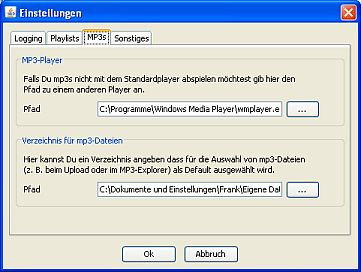

Im MP3-Explorer können Titel mit einem externen MP3-Player abgespielt werden. Werden Titel in der laut.fm-Datenbank gesucht - z. B. in der Playlist-Ansicht - kann mit Hilfe eines externen MP3-Players in die gefundenen Titel hinein gehört werden.
So lange Du nicht explizit einen Player konfiguriert hast versucht Station Admin den in Deinem Betriebssystem konfigurierten Defaultplayer zum Abspielen zu verwenden. Es sind jedoch Konfigurationen bekannt in denen das schlicht nicht funktioniert (z. B. Windows Media Player unter Windows 7) - da es sich hier um durch Java bereitgestellte Funktionalität handelt kann von Seiten von Station Admin daran leider nichts gemacht werden.

Um explizit einen MP3-Player zu konfigurieren klicke im -Menü auf und wechsele auf das -Tab. Im Bereich kannst Du einen Pfad zu einem MP3-Player angeben der zum Abspielen von mp3s verwendet werden soll. Der Pfad muß auf eine ausführbare Datei verweisen - unter Windows muß der Pfad also auf .exe enden.